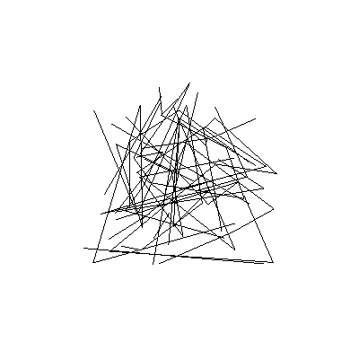

Note
Click here to download the full example code
Draw a bunch of lines#
This example demonstrates how multiple line-pieces can be drawn using one call, by discarding some fragments.
Note that this example uses canvas.context.X() to call gloo functions. These functions are also available as vispy.gloo.X(), but apply explicitly to the canvas.
Mouse wheel allows zooming in on the lines. Spacebar controls a timer that triggers rotation of the lines in 3D space.
import numpy as np
from vispy import gloo
from vispy import app
from vispy.util.transforms import perspective, translate, rotate
W, H = 400, 400
# Create vertices
n = 100
a_position = np.random.uniform(-1, 1, (n, 3)).astype(np.float32)
a_id = np.random.randint(0, 30, (n, 1))
a_id = np.sort(a_id, axis=0).astype(np.float32)
VERT_SHADER = """
uniform mat4 u_model;
uniform mat4 u_view;
uniform mat4 u_projection;
attribute vec3 a_position;
attribute float a_id;
varying float v_id;
void main (void) {
v_id = a_id;
gl_Position = u_projection * u_view * u_model * vec4(a_position,1.0);
}
"""
FRAG_SHADER = """
varying float v_id;
void main()
{
float f = fract(v_id);
// The second useless test is needed on OSX 10.8
if( (f > 0.0001) && (f < .9999) )
discard;
else
gl_FragColor = vec4(0,0,0,1);
}
"""
class Canvas(app.Canvas):
# ---------------------------------
def __init__(self):
app.Canvas.__init__(self, keys='interactive', size=(W, H))
self.program = gloo.Program(VERT_SHADER, FRAG_SHADER)
# Set uniform and attribute
self.program['a_id'] = gloo.VertexBuffer(a_id)
self.program['a_position'] = gloo.VertexBuffer(a_position)
self.translate = 5
self.view = translate((0, 0, -self.translate), dtype=np.float32)
self.model = np.eye(4, dtype=np.float32)
gloo.set_viewport(0, 0, self.physical_size[0], self.physical_size[1])
self.projection = perspective(45.0, self.size[0] /
float(self.size[1]), 1.0, 1000.0)
self.program['u_projection'] = self.projection
self.program['u_model'] = self.model
self.program['u_view'] = self.view
self.theta = 0
self.phi = 0
self.context.set_clear_color('white')
self.context.set_state('translucent')
self.timer = app.Timer('auto', connect=self.on_timer, start=True)
self.show()
# ---------------------------------
def on_key_press(self, event):
if event.text == ' ':
if self.timer.running:
self.timer.stop()
else:
self.timer.start()
# ---------------------------------
def on_timer(self, event):
self.theta += .5
self.phi += .5
self.model = np.dot(rotate(self.theta, (0, 0, 1)),
rotate(self.phi, (0, 1, 0)))
self.program['u_model'] = self.model
self.update()
# ---------------------------------
def on_resize(self, event):
gloo.set_viewport(0, 0, event.physical_size[0], event.physical_size[1])
self.projection = perspective(45.0, event.size[0] /
float(event.size[1]), 1.0, 1000.0)
self.program['u_projection'] = self.projection
# ---------------------------------
def on_mouse_wheel(self, event):
self.translate += event.delta[1]
self.translate = max(2, self.translate)
self.view = translate((0, 0, -self.translate))
self.program['u_view'] = self.view
self.update()
# ---------------------------------
def on_draw(self, event):
self.context.clear()
self.program.draw('line_strip')
if __name__ == '__main__':
canvas = Canvas()
app.run()
Total running time of the script: ( 0 minutes 0.658 seconds)